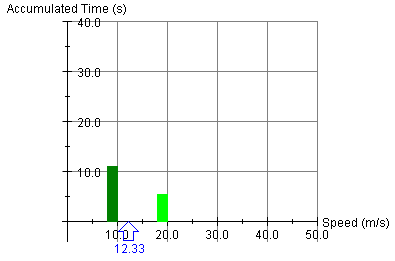
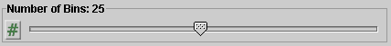
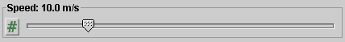
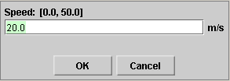
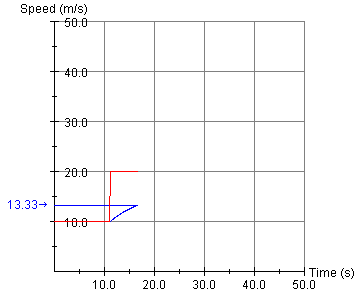

There are two basic control buttons:
-
Play/Pause. Starts the motion.
After Play has been clicked, the button will change into the Pause button
 .
.
Clicking Pause will freeze the motion. To resume the motion, click Play once more.
-
 Reset. Resets the applet to its default setting.
Reset. Resets the applet to its default setting.


The Trace toggle button lets you display/hide the path traveled by the object (car).
The Velocity toggle button lets you display/hide the arrow representing the moving object's velocity vector.

The Image toggle button lets you display/hide the image of the car.


The Data toggle button lets you display/hide the Data box. The box can be dragged to a convenient location by clicking on it and dragging. The green scroll bar on the right lets you scroll through the list of bins.
The Data box contains information in numerical form that the graph of accumulated time vs. speed shown below displays graphically.

The five columns of the Data box contain the following information.
- Column 1: Bin Number. The speed of the moving object (car) can be varied between 0 and 50 m/s. This interval can be divided into a number of equally wide bins by using the Number-of-Bins slider. The bins are numbered starting with No.0 for the bin with the smallest speeds including 0 m/s. (The information for Bin 0 is not visible in the image of the Data box above.
- Column 2: Accumulated Time t in s. The object's speed can be varied. In general, if the motion is observed during a time interval of duration T, the object's speed takes on values that lie in different bins, sometimes returning to values in a given bin repeatedly. The Accumulated Time for a bin is the total time elapsed within the time interval T during which the object's speed has a value in the given bin. The total of all accumulated bin times is equal to time T and is listed at the bottom of Column 2.
- Column 3: Bin Interval in m/s. This is the range of speeds for a given bin. The range is open on the left and closed on the right. E.g., in the image of the Data box above, Bin 4 is the speed interval (8.0,10.0]. It contains all speeds between 8.0 m/s and 10.0 m/s, not including 8.0 m/s but including 10.0 m/s. The Bin-0 interval, containing the value 0 m/s, is closed at both ends. Notice the rounded parentheses to denote the open end of the interval and the square parentheses for the closed end.
- Column 4: Bin Speed v in m/s. This is the speed at the mid-point of the bin. E.g., the bin speed for Bin 4 is equal to 9.0 m/s.
- Column 5: v*t in m. This is the product of the bin speed v and the accumulated time t for a given bin. It is equal to the distance that would have been traveled by the object if it had maintained the bin speed throughout the amount of accumulated time t. The total bin distance sbin, which is the sum of the distances v*t for all bins, is listed at the bottom of Column 5.
Below the five columns and the Totals of Columns 2 and 5, three additional values are listed:
- Distance traveled (exact value). This is the total distance s traveled in the entire time interval T. It is in general not equal to the the sum sbin of the bin distances v*t.
- Bin Speed Average. This is equal to the total bin distance sbin divided by the total accumulated time T.
- Average Speed (exact value). This is the true value of the average speed. The bin speed average would be equal to it if one took infinitely many bins of vanishing width.
There are two sliders, shown in the following image. Clicking on a slider to the left or right of the slider tab allows fine adjustment of the slider setting.


Clicking on the Input Dialog button  of a slider will open a dialog for entering an
exact value for the slider setting. The dialog for the
Speed-slider is illustrated below. The range in which
values can be entered, from 0 m/s to 50.0 m/s in this
case, is indicated above the data entry field.
of a slider will open a dialog for entering an
exact value for the slider setting. The dialog for the
Speed-slider is illustrated below. The range in which
values can be entered, from 0 m/s to 50.0 m/s in this
case, is indicated above the data entry field.

The two sliders in the control panel allow you to adjust the values of the following quantities.
- Number of Bins. The number of bins into which the speed interval from 0 to 50 m/s can be divided can be set to any number from 1 to 50 by means of this slider. All bins have the same width.
- Speed. The moving object (car) can move counter-clockwise or clockwise on an oval track. The speed of the motion is set by the Speed Slider. The range of the speed is from 0 to 50.0 m/s, in steps of 0.1 m/s.


When the Speed vs. Time checkbox is checked, a graph of the moving object's speed vs. time is displayed as in the following image.

The graph displays two curves: instantaneous speed vs. time in red and average speed from the beginning of the motion up to the given instant in blue. In an interval where the latter is equal to the former, the blue graph representing the latter is covered up by the red graph representing the former. In the image above, this is the case in the initial interval from t = 0 to approximately t = 11 s.
The graph also indicates the average speed over the entire time interval by a horizontal blue line and a corresponding value on the vertical axis.
When the Accumulated Time vs. Speed checkbox is checked, the graph of Accumulated Time vs. Speed is displayed as in the following image.
The graph displays the numerical information contained in the Data box in graphical form. See Point 2, "Data Box", for details. It also indicates the Bin Speed Average from the Data Box by means of a blue arrow and a numerical value.
Both graphs can be dragged to a convenient location by clicking in the area of the graph and dragging.
The direction of the motion, whether counter-clockwise or clockwise, can be chosen by clicking one of the two radio buttons.